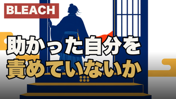
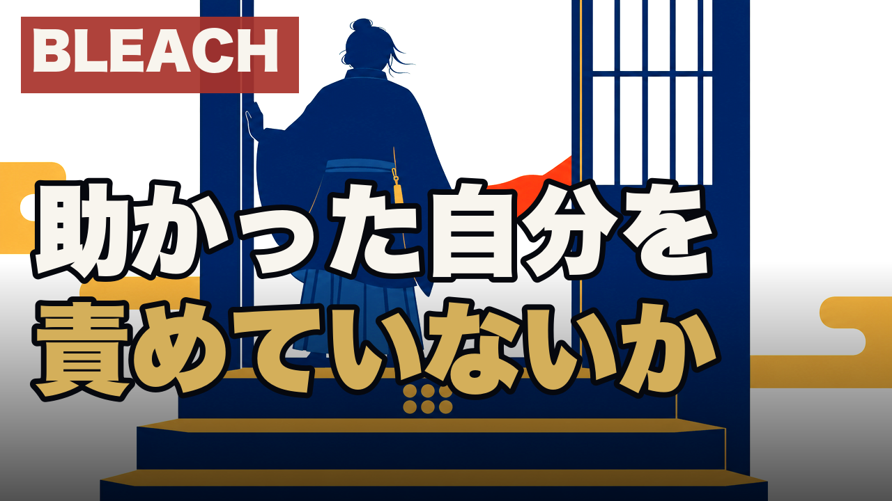
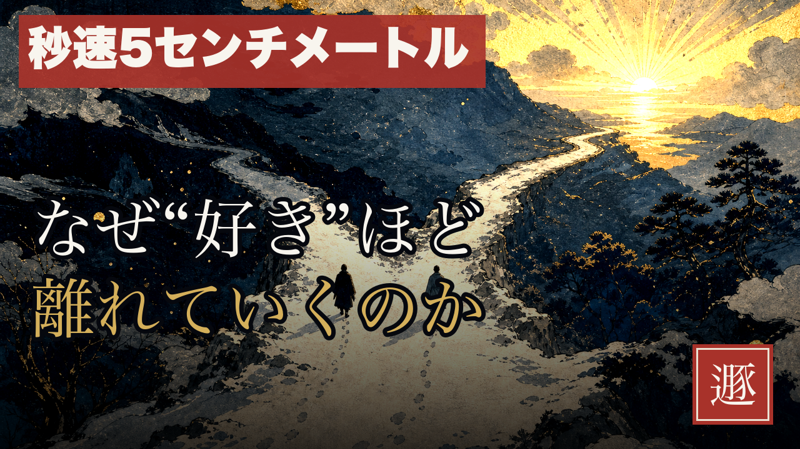
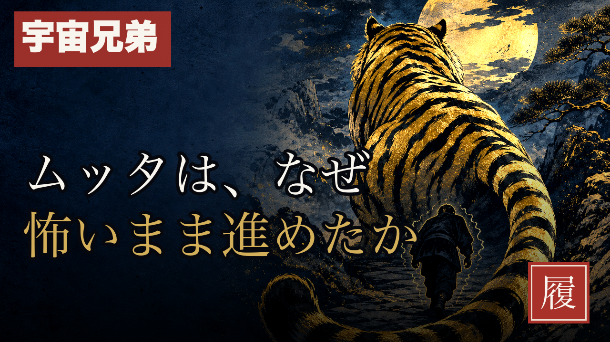
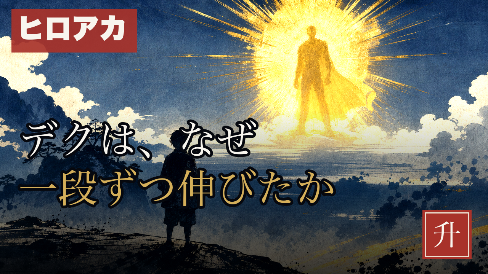

HaQei / アニメと易経 ・ ep37 クリック面
実測で、タイトルとサムネが同じことを言う動画はCTR下位、唯一分業できている動画（秒速）が首位でした。ep37を秒速型に作り直しています。

| ep | タイトル ↔ サムネ | 判定 | 実測CTR |
|---|---|---|---|
| 10 宇宙兄弟 | 「怖がりのまま行けた理由」↔「なぜ怖いまま進めたか」 | 完全重複 | 0.3% |
| 20 ヒロアカ | 「一段ずつ積み上げた理由」↔「なぜ一段ずつ伸びたか」 | 完全重複 | 0.3% |
| 9 秒速 | 「すぐ近くにいたのに届かなかった」↔「なぜ"好き"ほど離れていくのか」 | 分業 | 2.6%（首位） |
| 37 BLEACH（今回） | 「壁を破られた夜に落とさなかったもの」↔「助かった自分を責めていないか」 | 分業 | — |




・B: 【第三十七話・震】を検索KWタグ（【アニメ考察】等）へ置換し、次の6本でA/B → 今回は従来通り【第三十七話・震】を維持しています。ただしred-teamは「27/27で分散ゼロ＝この1手でしか対照群を作れない」と指摘。
・C: サムネから卦バッジを外す → 「震」の朱印バッジは残しています（180pxでは赤い染みにしか見えません）。
このクリック面で確定しますか？